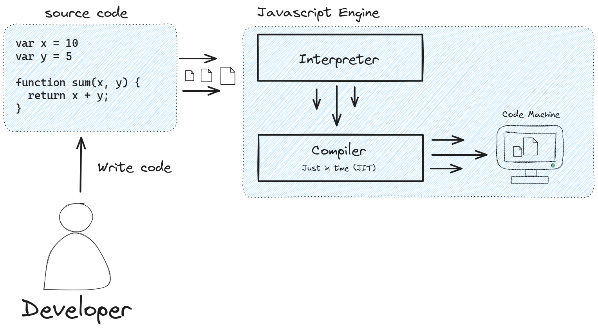

Retomando Conceitos da Linguagem JS (Part I) üìô
Afinal o que é o Javascript?
Javascript é uma linguagem de programação, E como todas as demais linguagens de programação funciona traduzindo sintaxe escrita de modo a converter as instruções para código de máquina.

O JavaScript é amplamente categorizado como uma linguagem de criação de scripts ou uma linguagem interpretada.
Javascript do lado cliente
O termo JavaScript do lado do cliente refere-se à maneira como o JavaScript funciona em seu navegador. Nesse caso, o mecanismo JavaScript está integrado ao código do navegador.
Javascript do lado do servidor
O termo JavaScript do lado do servidor se refere ao uso da linguagem de codificação na lógica de back-end do servidor. Nesse caso, o mecanismo JavaScript está diretamente no servidor.

Sintaxes e comandos basicos da linguagem
Toda linguagem de programação precisa de uma padronização para reger as regras e o nivelamento da linguagem ao nível global, e para o JavaScript é isso que é o ECMAScript, a versão oficial da linguagem, tanto que o nome JavaScript, na verdade, é uma tradição do mercado de desenvolvimento, sendo o nome oficial da linguagem ECMAScript.
- No JavaScript, instruções são chamadas de declaração e são separadas por um ponto e vírgula (;)
-
JavaScript é case-sensitive (Ou seja significa que caracteres em caixa alta e em caixa baixa são tratados de modo diferente)
-
Uma declaração é uma linha de código que dá comando para execução de uma tarefa.
Declarando variaveis
Você pode declarar uma variável de três formas:
- Com a palavra chave 
[var]. Por exemplo, var x = 42. Esta sintaxe pode ser usada para declarar tanto variáveis locais como variáveis globais. - Por simples adição de valor. Por exemplo, 
x = 42. Isso declara uma variável global. Essa declaração gera um aviso de advertência no JavaScript. Você não deve usar essa variante. - Com a palavra chave 
[let]. Por exemplo, let y = 13. Essa sintaxe pode ser usada para declarar uma variável local de escopo de bloco.
Convenções de escrita
- Variaveis devem ser escritas com o padrão camelCase exemplo:
var oneVariable = 12
- Constantes devem ser escritas em caixa alta para melhorar a legibilidade do codigo exemplo:
const PERCENTAGE = 0.33
Escopo de variável
Quando você declara uma váriavel fora de qualquer função, ela é chamada de variável global, porque está disponível para qualquer outro código no documento atual. Quando você declara uma variável dentro de uma função, é chamada de variável local, pois ela está disponível somente dentro dessa função.
Utilização da sintaxe do var para declaração de escopo global
1 2 3 4 | |
Utilização da sintaxe do var para declaração de escopo local
1 2 3 4 | |
Tipos de dados primitivos
- String: pode ser qualquer valor que esteja entre aspas simples ou aspas duplas e que, normalmente, representam textos em geral. Podem ser letras, números e sinais de pontuação;
- Numérico: números;
- Symbol: símbolos;
- Booleano: dados que apresentam apenas duas possibilidades de valores – true (verdadeiro) ou false (falso);
- Null e undefined: são dados que representam variáveis que, ou não possuem valor (null) ou, então, estão incompletas (undefined, ou seja, indefinidas);
- Objeto: tipo de dado que funciona como uma entidade independente, no qual há um conjunto de atributos aninhados a uma variável.
JavaScript é uma linguagem dinamicamente tipada. Isso significa que você não precisa especificar o tipo de dado de uma variável quando declará-la, e tipos de dados são convertidos automaticamente conforme a necessidade durante a execução do script.
1 2 3 4 5 6 7 8 9 10 | |
Em expressões envolvendo valores numérico e string com o operador +, O JavaScript converte valores numérico para
strings. Por exemplo, considere a seguinte declaração:
1 2 | |
Podemos verificar o tipo de dado através de um operador reservado do ecmascript chamado typeof
1 2 3 4 5 | |
Convertendo tipos de dados
Quando estamos falando de números, podemos utilizar expressões para realizar a conversão de dados do tipo string em outros formatos como numérico e ponto flutuante.
1 2 3 4 5 6 7 8 9 10 11 12 13 | |
Expressões e Operadores
Como qualquer outra linguagem de programção, o javascript faz uso em sua sintaxe para realizar determinadas operações. Podemos categorizar esses operadores em:
-
Operador de Atribuição:
Um operador de atribuição atribui um valor ao operando à sua esquerda baseado no valor do operando à direita, usando o simbolo
=, logo temos os seguintes exemplox = y/x = 10/x = "Hello Word"Algumas das variações do operador:
Nome Operador encurtado Significado Atribuição x = y x = y Atribuição de adição x += y x = x + y Atribuição de subtração x -= y x = x - y Atribuição de multiplicação x *= y x = x * y Atribuição de divisão x /= y x = x / y Atribuição de resto x %= y x = x % y -
Operador de comparação:
Um operador de comparação compara seus operandos e retorna um valor lógico baseado em se a comparação é verdadeira. Os operandos podem ser numéricos, strings, lógicos ou objetos. Logo temos os seguintes exemplos
x == 10/y != xAlgumas das variações do operador:
1 2
var num1 = 3; var num2 = 4;Operador Descrição Exemplos que retornam verdadeiro Igual (==) Retorna verdadeiro caso os operandos sejam iguais. num1 == 3 num1 == "3" 3 == '3'Não igual (!=) Retorna verdadeiro caso os operandos não sejam iguais. num1 != 4 num2 != "3"Estritamente igual (===) Retorna verdadeiro caso os operandos sejam iguais e do mesmo tipo. num1 === 3Estritamente não igual (!==) Retorna verdadeiro caso os operandos não sejam iguais e/ou não sejam do mesmo tipo. num1 !== "3" 3 !== '3'Maior que (>) Retorna verdadeiro caso o operando da esquerda seja maior que o da direita. num2 > num1 "12" > 2Maior que ou igual (>=) Retorna verdadeiro caso o operando da esquerda seja maior ou igual ao da direita. num2 >= num1 num1 >= 3Menor que (<) Retorna verdadeiro caso o operando da esquerda seja menor que o da direita. num1 < num2 "12" < "2"Menor que ou igual (<=) Retorna verdadeiro caso o operando da esquerda seja menor ou igual ao da direita. num1 <= num2 num2 <= 5 -
Operadores aritmético:
Operadores aritméticos tomam valores numéricos (sejam literais ou variáveis) como seus operandos e retornam um único valor númerico. Os operadores aritméticos padrão são os de soma
(+), subtração(-), multiplicação(*)e divisão(/)Operador Descrição Exemplo Módulo (%) Operador binário. Retorna o inteiro restante da divisão dos dois operandos. 12 %5 retorna 2.Incremento (++) Operador unário. Adiciona um ao seu operando. Se usado como operador prefixado (++x), retorna o valor de seu operando após a adição. Se usado como operador pósfixado(x++), retorna o valor de seu operando antes da adição.Se x é 3, então ++x define x como 4 e retorna 4, enquanto x++ retorna 3 e, somente então, define x como 4. Decremento (--) Operador unário. Subtrai um de seu operando. O valor de retorno é análogo àquele do operador de incremento. Se x é 3, então (--x)define x como 2 e retorna 2, enquanto(x--)retorna 3 e, somente então, define x como 2.Negação (-) Operador unário. Retorna a negação de seu operando. Se x é 3, então -xretorna -3.Adição (+) Operador unário. Tenta converter o operando em um número, sempre que possível. +"3"retorna 3 -
Operadores lógicos:
Operadores lógicos são utilizados tipicamente com valores booleanos (lógicos); neste caso, retornam um valor booleano
trueoufalse.Operador Utilização Descrição AND lógico (&&)expr1 &&expr2(E lógico) - Retorna expr1 caso possa ser convertido para falso; senão, retorna expr2. Assim, quando utilizado com valores booleanos, && retorna verdadeiro caso ambos operandos sejam verdadeiros; caso contrário, retorna falso. OU lógico (||)expr1 ||expr2(OU lógico) - Retorna expr1 caso possa ser convertido para verdadeiro; senão, retorna expr2. Assim, quando utilizado com valores booleanos, NOT lógico (!)!expr(Negação lógica) Retorna falso caso o único operando possa ser convertido para verdadeiro; senão, retorna verdadeiro. -
Operador Ternário condicional:
O operador condicional (ternário) é o único operador JavaScript que possui três operandos. Este operador é frequentemente usado como um atalho para a instrução
if1condition ? expr1 : expr21 2 3 4 5 6 7 8 9 10 11 12 13 14 15 16 17 18 19 20 21 22 23 24 25 26 27
// ----- option one ------ let age = 16; age > 18 ? console.log("yes! continue"): console.log("no! stop"); // ---- option two ------- let stop = false, age = 23; age > 18 ? (alert("OK, you can go."), location.assign("continue.html")) : ((stop = true), alert("Sorry, you are much too young!")); // ------ option three ---- let age = 16; let url = age > 18 ? (alert("OK, you can go."), // alert returns "undefined", but it will be ignored because // isn't the last comma-separated value of the parenthesis "continue.html") // the value to be assigned if age > 18 : (alert("You are much too young!"), alert("Sorry :-("), // etc. etc. "stop.html"); // the value to be assigned if !(age > 18)
Trabalhando com condicionais
Em qualquer linguagem de programação, o código precisa tomar decisões e realizar ações de acordo, dependendo de diferentes entradas. As declarações condicionais nos permitem representar tomadas de decisão como estas em JavaScript, a partir da escolha que deve ser feita (por exemplo, "um biscoito ou dois"), ao resultado obtido dessas escolhas (talvez o resultado de "comer um biscoito" possa ser "ainda sentido fome ", e o resultado de "comer dois biscoitos" pode ser "sentir-se satisfeito" por exemplo.
De longe o tipo mais comum de declaração condicional que você usará em JavaScript é com base na expressão if else
1 2 3 4 5 | |
Então vamos partir de um contexto mais proximo de real para exemplificar usando o javascript para resolver uma decisão condicional, vejamos abaixo:
Precisamos construir uma aplicação que realize o login de usuário ao sistema, e para isso precisamos validar uma condições tais como:
- O usuário que está tentando fazer login é um usuario cadastrado
- O usuário que está tentando fazer login possui algum tipo de status que impeça ele entrar no sistema
- Caso o usuário consiga entrar no sistema para onde ele deve ser direcionado
1 2 3 4 5 6 7 8 9 10 11 12 13 14 15 16 17 18 19 20 21 22 23 24 25 26 27 | |
Veja que na linha 23 do nosso código, fazemos a expressão else if que nada mais é que permitir que o
javascript encadei outras tomadas de decisões.
Outra forma de trabalhar com tomadas de decisões é através da expressão switch case, porém essa tem uma
particularidade que é, com um unico valor de entrada podemos fazer validações de forma encadeada por exemplo:
1 2 3 4 5 6 7 8 9 10 11 12 13 14 15 16 17 18 19 20 21 22 | |
Veja que neste exemplo acima fizemos a checagem apenas de um unico valor de entrada, no caso o status
do usuario, passamos a executar uma validação encadeada, onde de acordo com case meu codigo tem uma saida
diferente, e mais usamos essa expressão break para que quando a condição for atendida ele simplesmente quebra
a continução dos demais case, ou seja nosso código iria entrar na primeiro caso e como o status ACTIVE é uma
condição valida, ele não executaria as demais linhas abaixo, indo direto para linha 22 que é o fim da instrução
do switch case